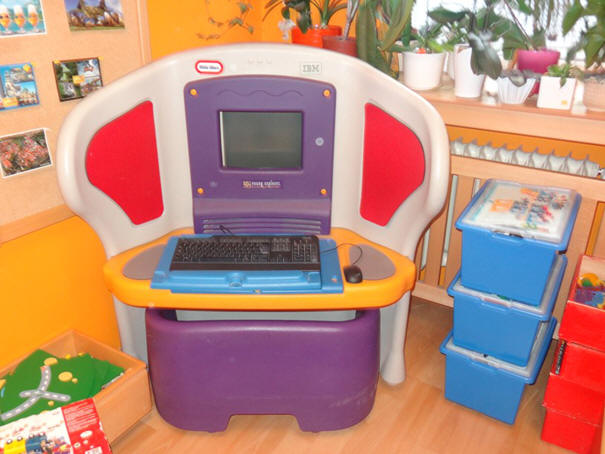
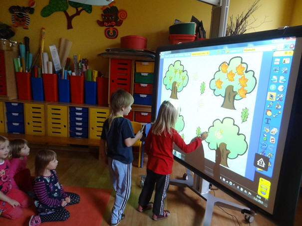
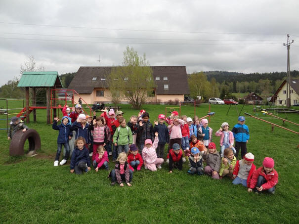
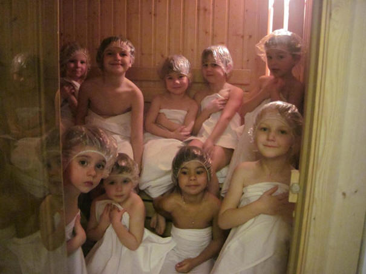
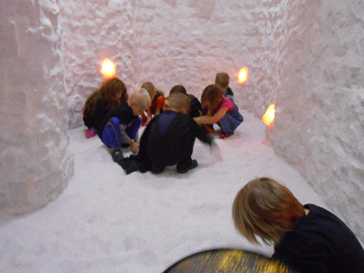

Aktivity
V rámci školního roku jsou realizovány (mimo jiné) následující
aktivity:
- snažíme se děti učit
zdravému životnímu stylu v rámci zdravotního projektu „Zdravá
ABECEDA“
- pravidelně navštěvujeme
s dětmi vlastní saunu - jsme členem Asociace saunujících školek
ČR
- využíváme i vlastní solnou
jeskyni - povzbuzení imunitního systému, podpora při léčbě
zdravotních onemocnění
- v rámci projektových dnů
je věnována zvýšená péče zubní hygieně
- 2x ročně jezdíme na školu
v přírodě - na podzim do podhůří Šumavy a na jaře do Jizerských
hor
- volný čas mohou děti
trávit na naší školní zahradě, tělesná výchova probíhá ve
vlastních tělocvičnách
- rozvíjíme s dětmi počítačovou gramotnost
- k výuce využíváme moderní
technologie - interaktivní tabule ActiveBoard, MagicBox, digitální
mikroskopy, počítače a další
- jsme zapojeni do projektu
„Celé Česko čte dětem“
- každý měsíc pořádáme
divadelní představení přímo u nás v MŠ
- pravidelná návštěva stálé
divadelní scény v rámci Klubu malého diváka
- pro rodiče s dětmi
pořádáme keramické dílny, táborák, vánoční dílny a další
- součástí
programu zaměřeného na environmentální výchovu jsou pěstitelské
i chovatelské pokusy a činnosti, které provádíme během celého
roku uvnitř i na školní zahradě
- věnujeme zvýšenou pozornost prevenci negativních vlivů a závislostí
- snažíme se využívat i
další preventivní programy různých organizací – projekt studentů
LF UK „Medvídkova nemocnice“, Prevence dětem o. s. -
Bezpečnostní průprava dětí“, Dental
Prevention - zubní prevence a podobně
- jsme spolupracující katedrová škola
katedry Školského managementu PedF UK
- škola je zapojena do projektu MAP MČ Praha 8




